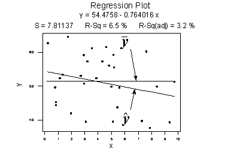

Why Stats?
Why should I care about statistics in the first place?
STATISTICS TYPES
Descriptive statistics: Collecting, summarizing and describing data.
Inferential statistics: Drawing conclusions or making decisions concerning a population based on
a sample drawn from population.
Terminology
Population: All data of interest.
Parameter: Descriptive measure of population(Uppercase)
Census: Gathering data from whole population of interest.
Sample: One or more observations drawn from population to make inferences about the
population.
Statistic: Descriptive measure of sample.(Lowercase)
Survey/Sampling: Gathering data to form sample of population.
Measures of central tendency
Mean:Average of values in dataset
Median:Middle value in a dataset
Mode:Most commonly occurring value in dataset
Measures of spread
Variance:How much the values in dataset are varying from the mean.
Standard Deviationblah
TYPES OF DATA
- Quantitative data
- Discrete data: Countably finite or infinite
- Countably finite: Number of heads in 100 coin flips
- Countably infinite: Number of coin flips till we get 100 heads
- Continuous data: Uncountably finite or infinite
- Eg: Litres filled in a car
- Categorical data
- Nominal data: Used to label variables without any numerical significance
- Eg: Gender of a person
- Ordinal data: numerical + categorical and numbers have mathematical meaning.
- Eg: Satisfaction rating in a hotel on a scale of 1-10
COLLECTING DATA
Write about experiment in statistics here.
Add example here explaining wt popln is in the example and who the sample is.
SAMPLING
Sampling techniques:
- Simple random sampling
- (With replacement) Every item has an equal chance of being picked.
- (Without replacement) Every item's chance of being included
- Stratified sampling
- Population partitioned into non overlapping groups(strata) and a sample is selected
within each
stratum.
- Cluster sampling
- Divide population into clusters
- Out of all clusters, pick few clusters by SRS.
- Select all data from selected clusters into samples.
RELATIONSHIP BETWEEN TWO QUANTITATIVE VARIABLES
How to?
- Graphs: Scatterplot and which other graphs?
Coefficient of determination (r2)

In this scatter plot, to examine relationship between two quantitative variables, the horizontal line denotes slope=0 or implies that there's no relation between the variables plotted.
The slightly tilted line is our best-fit regression line. This seems to have slope closer to 0, implying that the relationship is weaker.
Note that the data points don't fall near the regression line.
Covariance
It helps us understand how two variables vary with each other.
-
+ve covariance: Higher than avg vals of one variable, associated with higher than avg of the
other variable.
-
-ve covariance: Higher than avg vals of one variable, associated with lower than avg of the
other variable.
-
0 covariance : No association bw the variables.
-
Covariance is not standardized, unlike the correlation coefficient. So, covariance values
can range from -inf to +inf.
-
Unit: Units of x,y product.
-
Drawback: The value of covariance changes when the unit of any of the variables changes.
However the strength of the relationship doesn't change wrt units.
Correlation
Correlation is the concept of
linear relationship between two variables.
- Correlation coefficient 'r' (Pearsons coefficient) is a statistical measure of correlation
between two variables.
- r=1: